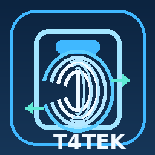

T4TEK Attendance Gateway connects Odoo with Windows Controllers and ZKTeco attendance/access-control devices. The module uses a desired-state synchronization model so Controllers pull the expected state from Odoo, calculate local deltas, and synchronize only what changed.
sync_fingerprint_set jobs instead of per-finger command jobs./api/entry_control/v1/auth/token./api/entry_control/v1/hello./api/entry_control/v1/sync/fingerprints/upload./api/entry_control/v1/sync/manifest.